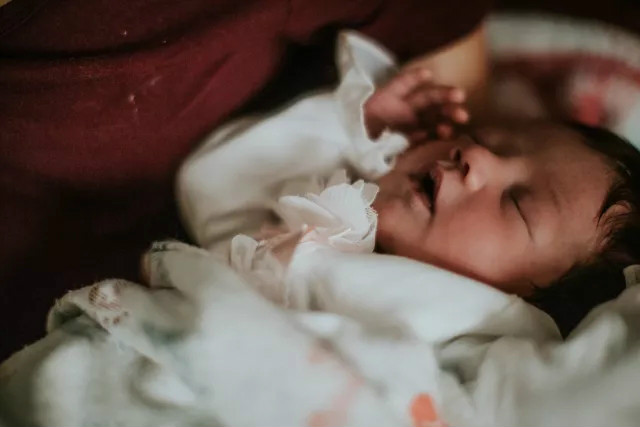
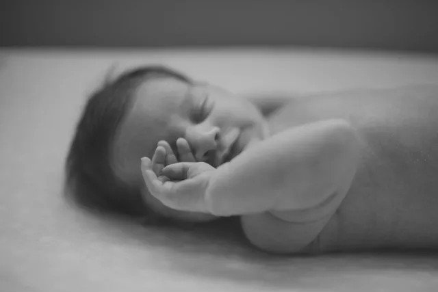

1
在腹肌没有足够力量承担的情况下，腹部会因此显得比较突出，特别是宝宝被抱着的时候，腹部会显得突突下垂。此外，宝宝身体前后是呈圆形的，不像大人那样略呈扁平状，这也是让肚子看起来胀鼓鼓的原因之一。
2
宝宝比大人更容易胀气。宝宝进食、吸吮太急促，会使腹中吸入空气；奶瓶的奶嘴孔大小不适当，空气也会通过奶嘴的缝隙进入宝宝体内；此外，宝宝过度哭闹吸入了空气；进食奶水或其他食物，在消化道内通过肠内菌和其他消化酶作用而发酵，产生大量的气体都会促使腹胀。
如果宝宝能吃、能拉、没有呕吐的现象、肚子摸起来软软的、活动力良好、排气正常、体重正常增加，这一类腹胀大多属于功能性腹胀，无需特别治疗，只要采取预防措施就可以了。
3
消化不良及便秘使肠道因粪便堆积，促使产气的坏菌增生，或牛奶蛋白过敏、乳糖不耐、肠炎等引起消化、吸收不良，易产生大量的气体。
4
腹腔内器官肿大或长了肿瘤，如肝脾肿大、肝硬化等，腹腔内的器官和组织都有可能长肿瘤，而肿瘤越长越大就会引起腹胀。
5
宝宝下肠道阻塞以腹胀为主。婴幼儿的肠阻塞，严重的完全阻塞，多在出生后不久就会因症状明显而被发现。但如果只是不完全的阻塞，也有可能拖很久后仍被遗漏。如先天性巨肠症，是因为胚胎发育期肠道神经节由上往下发育不完全而停止，造成大肠末端无法放松，使得上方正常的大肠胀得很大。症状除了宝宝有显著的腹胀外，通常也会有胎便延迟解出或便秘的现象。